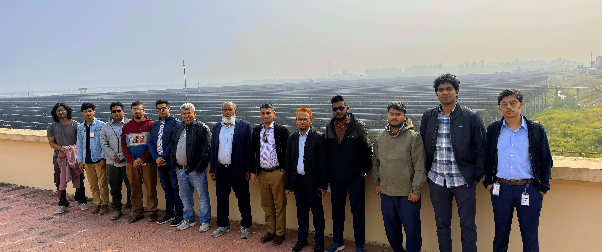

Development of an Artificial Intelligence Enabled Digital Twin of a Solar Photovoltaic Plant to Enhance Renewable Penetration in Power Grid of Bangladesh
Ongoing
Overview
Large amounts of solar power make the grid harder to run, because output changes quickly with the weather. This project builds an AI-enabled digital twin of a grid-connected solar PV plant: a live virtual copy that monitors the plant in real time and forecasts its output.
A 100 kWac rooftop PV testbed with a weather station and high-resolution data acquisition is being set up at MIST. The model is then tested on smaller systems and validated on a 7.6 MWp utility-scale plant, to support reliable renewable integration in Bangladesh.
Virtual Tour
Publications from this project
- Develop a scalable digital twin (DT) model for a 100 kWac grid-connected rooftop PV system as a testbed, designed to replicate the behavior of a large-scale solar farm.
- Integrate AI-based algorithms into the DT model for real-time monitoring and forecasting of PV output across various future time intervals.
- Evaluate the accuracy of the developed DT by comparing its outputs with actual measurements from the pilot-scale 100 kWac testbed system.
- Demonstrate and validate the scalability of the DT architecture by applying it to smaller PV systems, such as 20 kWp and 50 kWp installations.
- Assess the scalability and accuracy of the AI-driven DT model by comparing its performance with real-world data from a large-scale 7.6 MWp solar farm in Sirajganj, Bangladesh.
- Develop a comprehensive, multi-featured real-world solar PV dataset specific to Bangladesh for use in further research and applications.
- Principal Investigator: Major Shah Mohazzem Hossain, PhD
- Co-Principal Investigators: Major Mohammad Naim Uddin; Associate Professor Md. Ahsan Kabir
- Lead Research Engineer: Assistant Professor Hasan Monir
- Research Assistants: M. S. H. Molla, M. T. R. Sahed, R. Tanzim